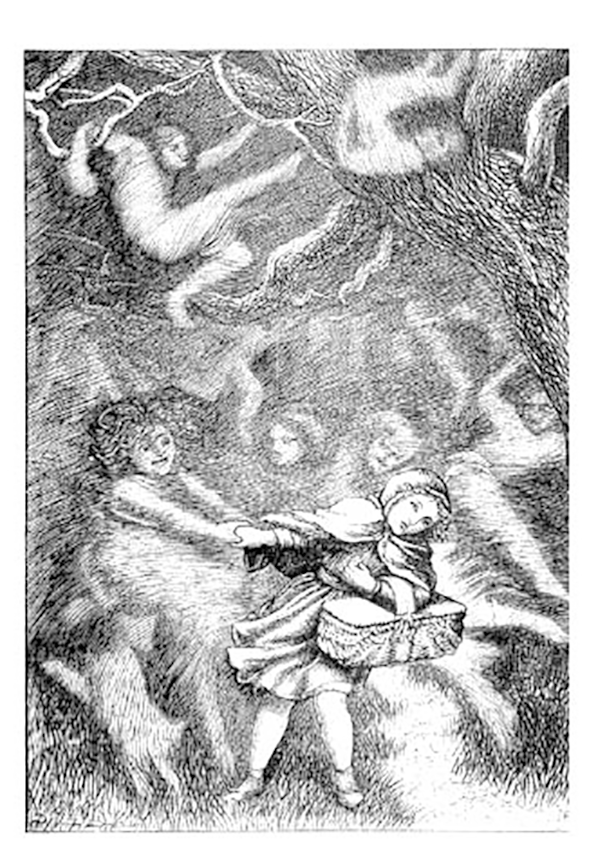
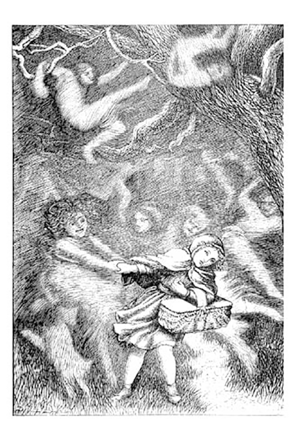

Los espíritus… criaturas ancestrales de las que solo sobreviven las leyendas. Para muchos, no son más que relatos de ficción nacidos del miedo o la imaginación; pero para otros, han sido un pilar invisible, una fuerza a la cual aferrarse en los años difíciles, en las cosechas perdidas, en las tragedias que no encuentran explicación o en los sentimientos que el corazón no sabe nombrar.
En tiempos de incertidumbre, estas presencias se convirtieron en consuelo y esperanza. Lo desconocido tomó forma, adquirió nombre, intención y voluntad. Así nacieron los dioses menores, los guardianes del bosque, los protectores del hogar y los espíritus que velan en silencio.
Sin embargo, con el paso de los siglos, las historias cambian. La tradición se distorsiona, el temor sustituye a la fe y lo que alguna vez fue protector puede transformarse en advertencia. Las leyendas se retuercen, se oscurecen, se adaptan a cada generación… pero nunca desaparecen.

Existen miles de leyendas. Forman parte de cada cultura y, con el paso del tiempo, se arraigan profundamente en ella, convirtiéndose en tradición, advertencia y herencia. Quienes buscan conocimiento o sabiduría tarde o temprano se encuentran con relatos sobre espíritus: entidades diversas, únicas en su esencia y naturaleza. Algunos son protectores; otros, consejeros silenciosos. Hay espíritus sabios, burlones, caprichosos… y, por desgracia, muchos cuya presencia es abiertamente maligna. Cada uno posee su carácter, su propósito y su manera de manifestarse. Y así como cada espíritu es distinto, también lo son los rituales destinados a invocarlos o apaciguarlos. Incluso entre ellos existen jerarquías y reglas inquebrantables. Normas antiguas que no deben ignorarse. Romperlas significa quedar a su merced, convertirse en presa de aquello que no se comprende. Buscar conocimiento exige respeto. Exige entender aquello que se intenta contactar y, sobre todo, comprender con claridad qué es lo que realmente se desea obtener. Porque quien invoca sin preparación, quien se acerca movido solo por curiosidad o arrogancia, corre el riesgo de perder algo más que la cordura… puede quedar marcado, maldecido por fuerzas que jamás supo controlar.

Si realmente deseas conocer más de este mundo, debes comprender el territorio en el que estás a punto de adentrarte… y, sobre todo, respetarlo.
Existen miles de leyendas. Forman parte de cada cultura y, con el paso del tiempo, se arraigan profundamente en ella, convirtiéndose en tradición, advertencia y herencia. Quienes buscan conocimiento o sabiduría tarde o temprano se encuentran con relatos sobre espíritus: entidades diversas, únicas en su esencia y naturaleza. Algunos son protectores; otros, consejeros silenciosos. Hay espíritus sabios, burlones, caprichosos… y, por desgracia, muchos cuya presencia es abiertamente maligna. Cada uno posee su carácter, su propósito y su manera de manifestarse. Y así como cada espíritu es distinto, también lo son los rituales destinados a invocarlos o apaciguarlos. Incluso entre ellos existen jerarquías y reglas inquebrantables. Normas antiguas que no deben ignorarse. Romperlas significa quedar a su merced, convertirse en presa de aquello que no se comprende. Buscar conocimiento exige respeto. Exige entender aquello que se intenta contactar y, sobre todo, comprender con claridad qué es lo que realmente se desea obtener. Porque quien invoca sin preparación, quien se acerca movido solo por curiosidad o arrogancia, corre el riesgo de perder algo más que la cordura… puede quedar marcado, maldecido por fuerzas que jamás supo controlar.

Si realmente deseas conocer más de este mundo, debes comprender el territorio en el que estás a punto de adentrarte… y, sobre todo, respetarlo.